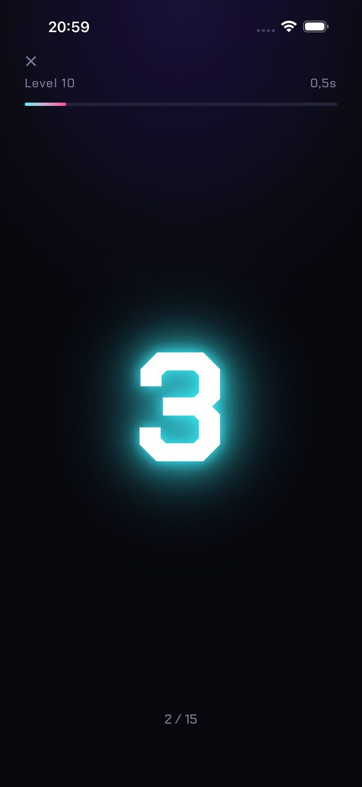
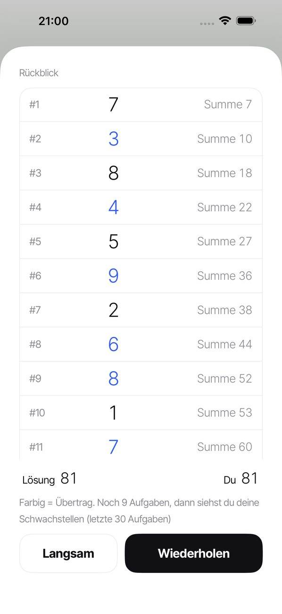
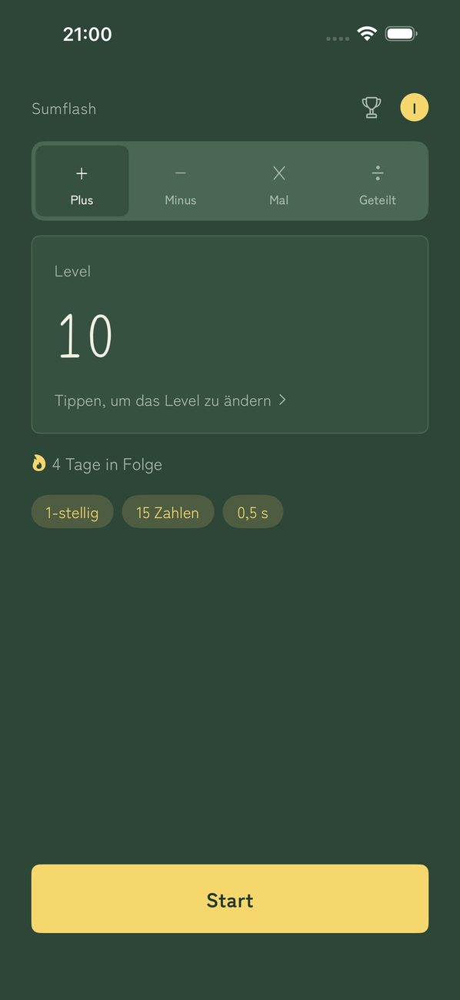

SUMFLASH
Zahlen blitzen auf. Rechne sie im Kopf zusammen.
Die Zahlen erscheinen nacheinander, jede nur einen Augenblick. Gib die Summe ein. Das ist Flash-Kopfrechnen, wie man es mit dem Soroban (dem japanischen Abakus) übt.
Laden im App StoreSieh, woran es lag
Nach jeder Antwort siehst du alle Zahlen, die aufgeblitzt sind, zusammen mit der jeweiligen Zwischensumme. Zahlen mit Übertrag sind farbig markiert, so erkennst du genau, wo du dich verrechnet hast. Spiele dieselbe Aufgabe noch einmal oder langsamer ab.
So funktioniert’s
- Auf Start tippenDie Zahlen erscheinen nacheinander.
- Summe eingebenTippe deine Antwort auf dem Ziffernblock ein.
- Ergebnis und RückblickZahlen und Zwischensummen zeigen dir, wo du dich verrechnet hast.
Screenshots



Funktionen
- 30 Level zur Auswahl (von 1-stellig × 3 Zahlen × 1 s bis 3-stellig × 15 Zahlen × 0,5 s)
- Anzeigezeit frei wählbar, von 0,2 bis 5,0 Sekunden
- Deine Serie auf dem Startbildschirm. Ein freier Tag pro Woche beendet sie nicht
- Tägliche Erinnerung zur Uhrzeit deiner Wahl (still an Tagen, an denen du geübt hast)
- Die Zahlen erscheinen und verschwinden einfach – keine Animation stört
- Fünf Designs (Minimal / Washi / Neon / Tafel / Sakura)
- Eigene Profile für jedes Familienmitglied
- Ranglistenspiel (1-stellig × 10) mit Game-Center-Bestenlisten
- Wähle über die Tabs auf dem Startbildschirm Addition, Subtraktion (Plus und Minus gemischt), Multiplikation oder Division. Jede Rechenart hat ihre eigenen 30 Level
- Zahlen vorlesen lassen
- Deine Daten bleiben auf deinem Gerät (bist du bei Game Center angemeldet, wird nur deine Bestzeit im Ranglistenspiel für die Bestenliste an Apple gesendet). Kein Konto nötig
Premium
Keine Werbung. Monatliches, automatisch verlängerndes Abonnement. Jederzeit kündbar unter Einstellungen › Apple-ID › Abonnements. Premium entfernt nur die Werbung. Alle anderen Funktionen sind kostenlos.
Zur Werbung
Werbung erscheint unten auf dem Startbildschirm und zwischen den Runden. Keine Werbung, während Zahlen aufblitzen, während du deine Antwort eingibst oder während des Rückblicks. Mit Premium gibt es keine Werbung.